Emplea frameworks para el desarrollo de software
Materia
Frameworks es una asignatura curricular del plan de estudios del CECyTEM, impartida por el docente Jaime Cruz López, cuyo objetivo es desarrollar
y fortalecer las habilidades técnicas, analíticas y de resolución de problemas del alumno para comprender, analizar y aplicar frameworks de
programación, así como diseñar, estructurar y desarrollar aplicaciones de software de manera eficiente, utilizando buenas prácticas y metodologías
actuales.
La asignatura promueve el uso de herramientas tecnológicas modernas, el pensamiento lógico y computacional, y la capacidad de adaptarse a distintos
entornos de desarrollo, aplicando los conocimientos en contextos académicos y profesionales.
Durante el tercer semestre, esta asignatura tiene como propósito desarrollar en el alumno una comprensión sólida de la diversidad de enfoques y
soluciones técnicas desde las cuales puede abordarse un mismo problema de desarrollo de software, fomentando el pensamiento lógico, crítico y analítico.
Esto se logra mediante el análisis de estructuras de código, la comparación de tecnologías y frameworks, así como la construcción de aplicaciones web y
programas utilizando HTML, CSS, JavaScript, React y lenguajes orientados a bases de datos como Python, promoviendo soluciones claras, eficientes y bien
fundamentadas en contextos académicos y profesionales.
Objetivo
Desarrollar en el alumno la capacidad de pensamiento lógico, análisis y comunicación técnica, mediante la comprensión, interpretación y producción de proyectos de desarrollo web y de software, utilizando HTML, CSS, JavaScript, React y lenguajes orientados a bases de datos como Python, que le permitan diseñar, argumentar y justificar soluciones tecnológicas, valorar la diversidad de enfoques de programación y comunicar de manera eficaz sus ideas en contextos académicos y profesionales.
Evaluación y proyecto final
• Examen: 50%.
• Cuaderno: 25%.
• Proyecto: 25%.
Proyecto (por parcial)
Primer parcial
Proyecto empresarial - maquetado de la pagina
Segundo parcial
Maquina expendedora - individual con python
Tercer parcial
Pagina de la empresa - html y react
Pagina personal - temario de lo visto por materia (tercer semestre)
Temario tercer semestre - Emplea frameworks para el desarrollo de software
Primer parcial - Prácticas
Python y entorno
Python
Python es un lenguaje de programación de alto nivel, interpretado y de sintaxis clara, diseñado para desarrollar aplicaciones de manera eficiente y estructurada. Se utiliza para la creación de programas, análisis de datos, desarrollo web, automatización de procesos e inteligencia artificial, gracias a su versatilidad y amplia gama de bibliotecas.
Uso de Python
El uso de Python consiste en la aplicación de este lenguaje de programación de alto nivel para desarrollar soluciones eficientes, claras y escalables en distintos ámbitos tecnológicos. Python se utiliza para la creación de programas, desarrollo web, análisis y manejo de bases de datos, automatización de procesos, inteligencia artificial, ciencia de datos y cómputo científico, gracias a su sintaxis sencilla y su amplia variedad de bibliotecas.
Operadores de comparación
Los operadores de comparación son símbolos utilizados en programación para comparar dos valores y determinar la relación entre ellos. El resultado de la comparación es siempre un valor lógico: verdadero (True) o falso (False). Son fundamentales para tomar decisiones, controlar flujos de ejecución y evaluar condiciones en algoritmos.
Operadores condicionales
Los operadores condicionales son elementos fundamentales de la programación que permiten tomar decisiones lógicas dentro de un programa. Se utilizan para evaluar una condición y ejecutar distintas acciones según si esta se cumple o no. Gracias a ellos, el código deja de ser lineal y se vuelve dinámico, flexible y funcional.
Programa becas - Python
Un programa de becas en Python se utiliza para evaluar si un estudiante cumple ciertos criterios (promedio, ingreso familiar, edad, etc.) y tomar una decisión automática usando operadores de comparación y condicionales. Simple, eficiente y escalable.

operador condicional if
En Python, la instrucción if es una estructura condicional que permite tomar decisiones dentro de un programa. Evalúa una condición lógica y, si esta se cumple, ejecuta un bloque de instrucciones; si no, puede ejecutar una alternativa mediante else o elif.


operador condicional match
En Python, la instrucción match es una estructura de control condicional que permite comparar un valor con múltiples patrones
posibles y ejecutar un bloque de código según el caso que coincida. Funciona de manera similar a un switch, pero es más potente y flexible.
Su objetivo es simplificar la toma de decisiones cuando se tienen varias opciones, haciendo el código más claro, ordenado y legible.


bucle while
El bucle while es una estructura de control que permite repetir un bloque de instrucciones mientras una condición sea verdadera. Su ejecución depende directamente de la evaluación lógica de dicha condición, por lo que se utiliza cuando no se conoce de antemano cuántas veces debe repetirse un proceso, pero sí cuándo debe detenerse.


bucle for
El bucle for es una estructura de control que permite repetir un bloque de instrucciones un número determinado de veces, recorriendo de forma ordenada una secuencia de datos (como listas, rangos o cadenas). Se utiliza cuando el número de iteraciones está claramente definido, facilitando la automatización de tareas repetitivas de manera eficiente y controlada.

Segundo parcial - Prácticas
Paginas HTML
HTML
HTML (HyperText Markup Language) es el lenguaje base para estructurar páginas web. Define la organización del contenido —títulos, párrafos, enlaces, imágenes y formularios— mediante etiquetas, permitiendo que los navegadores interpreten y muestren la información de forma correcta.
Primera pagina HTML
En la primera pagina HTML lo que se busca es entender la estructura basica de una pagina web, desde el encabezado hasta los tipos de texto.
Tipos de H
En HTML, los tipos de “h” son las etiquetas de encabezado y van de < h1> a < h6>. Se usan para estructurar el contenido de una página de forma jerárquica.
< h1>: Título principal. El más importante. Normalmente uno por página.
< h2>: Subtítulo de primer nivel.
< h3>: Subtítulo de segundo nivel.
< h4>: Encabezado de menor jerarquía.
< h5>: Uso poco frecuente, detalles muy específicos.
< h6>: El nivel más bajo de importancia.
G.U.I (interfaz grafica del usuario)
Una G.U.I. (Graphical User Interface) o interfaz gráfica de usuario es el entorno visual que permite a una persona interactuar con un sistema informático de manera intuitiva, mediante ventanas, botones, menús, iconos y formularios, sin necesidad de usar comandos de texto.
Tkinter
Tkinter es una biblioteca estándar de Python utilizada para crear interfaces gráficas de usuario (GUI) de forma sencilla y estructurada. Permite desarrollar aplicaciones con ventanas, botones, etiquetas, cuadros de texto y menús, facilitando la interacción entre el usuario y el programa sin depender de la línea de comandos.
 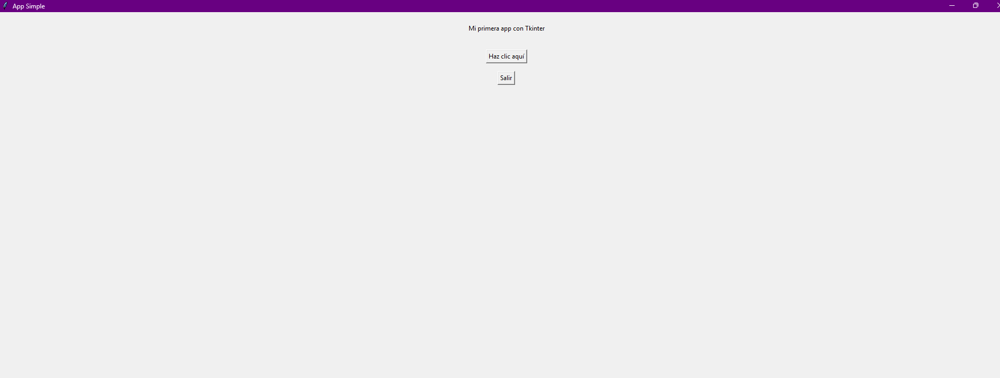
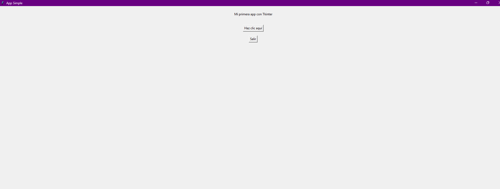
Label
Un Label en Tkinter es un componente de la interfaz gráfica de usuario (GUI) que se utiliza para mostrar texto, imágenes o información estática dentro de una ventana. Su función principal es informar al usuario, no recibir datos ni ejecutar acciones.
Tablas html
Las tablas en HTML se utilizan para organizar y presentar información en filas y columnas de forma estructurada y legible. Son ideales para datos comparativos, listados y reportes. Su correcta implementación mejora la claridad, accesibilidad y mantenimiento del contenido web.
CSS en html
CSS en HTML es el mecanismo de diseño y presentación que permite controlar la apariencia visual de una página web creada con HTML. Mientras HTML define la estructura (qué es cada elemento), CSS define el cómo se ve: colores, tamaños, tipografías, márgenes, alineación y diseño responsivo.
Frames en html
Los frames en HTML son una técnica clásica que permitía dividir una ventana del navegador en varias secciones, donde cada sección cargaba un documento HTML distinto de forma independiente. Se utilizaban para mostrar, por ejemplo, un menú fijo y un contenido cambiante en la misma pantalla.
Anclas en html
Las anclas en HTML son elementos que permiten crear enlaces de navegación dentro de una misma página o hacia otra página o recurso externo. Se implementan con la etiqueta < a> y se utilizan para dirigir al usuario a una sección específica, a otro documento, a un archivo o a un sitio web.
Proyecto final - maquina expendedora con tkinter
Una máquina expendedora con Tkinter es un proyecto de programación que consiste en diseñar una interfaz gráfica (GUI) en Python para simular el funcionamiento de una máquina real. El objetivo es integrar lógica de programación, control de eventos y diseño visual, todo en un solo sistema funcional.
Tercer parcial - Prácticas
React, pagina personal y empresarial
React
React es una biblioteca de JavaScript utilizada para construir interfaces de usuario dinámicas y eficientes, especialmente en aplicaciones web. Se basa en el uso de componentes reutilizables y en la actualización automática de la vista mediante un DOM virtual, lo que mejora el rendimiento y la organización del código.
Instalación de React
React es una biblioteca de JavaScript utilizada para crear interfaces de usuario dinámicas, especialmente en aplicaciones web, basada en componentes reutilizables que actualizan la pantalla de forma eficiente según los cambios de datos.
Para instalar React deberas entrar a la pagina de node js e ir a descargar, seguido seleccionaras el tipo de navegador que tienes.
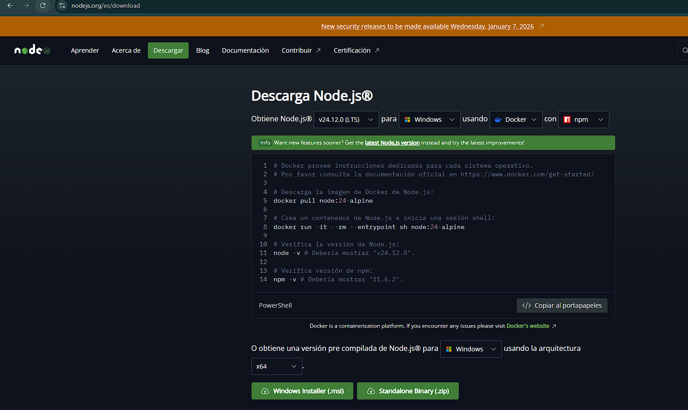Después iras a documentos y lo seleccionaras dando doble click,darás a todo next con base a tus necesidades para después instalar y finalizar
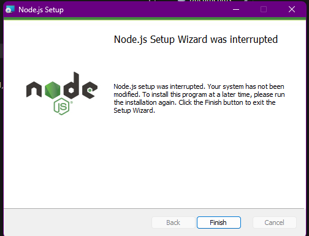React en VS Code
React en VS Code es el uso del editor Visual Studio Code como entorno de desarrollo para crear aplicaciones con React, aprovechando extensiones, terminal integrada y herramientas de depuración que facilitan escribir, organizar y ejecutar código JavaScript basado en componentes de forma eficiente y profesional.
Para instalar react en tu Visual Studio Code primero debes ingresar a la terminal y colocar esto.
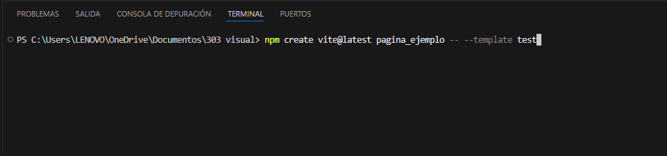Seguido de esto y todos estos pasos más.
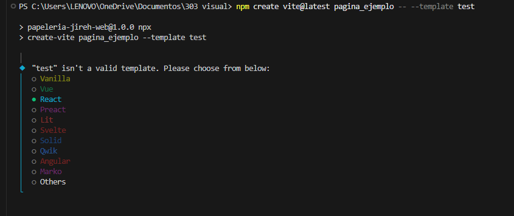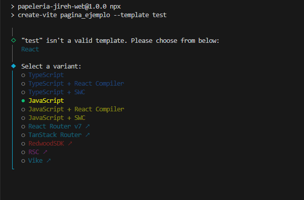 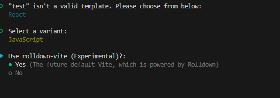
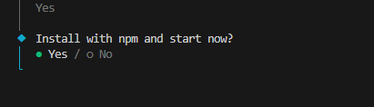 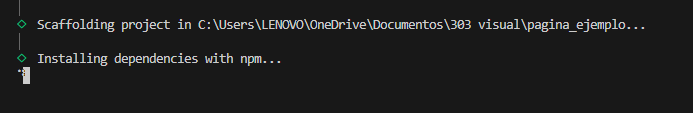
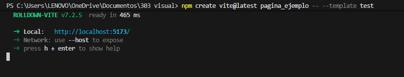 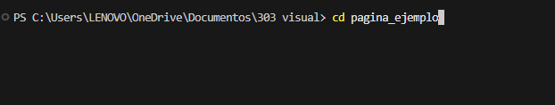
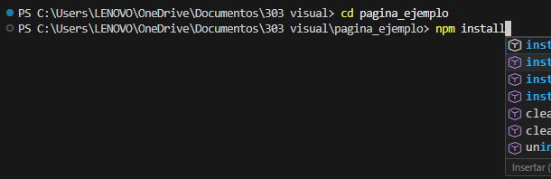 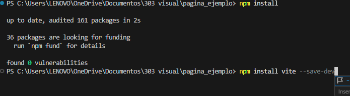
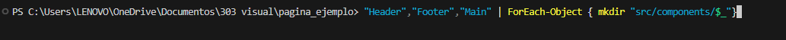 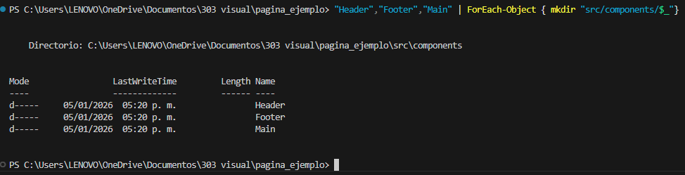
Fromulario web
Un formulario web GET y POST es un mecanismo de HTML que permite enviar datos del usuario desde una página web a un servidor.
GET: envía los datos a través de la URL. Es rápido y útil para consultas simples, pero no es seguro ni adecuado para información sensible.
POST: envía los datos de forma interna en la solicitud. Es más seguro, admite mayor cantidad de información y se usa para registros, inicios de sesión o envíos de datos importantes.
Pagina empresarial
La pagina empresarial se llevo a cabo durante los tres parciales donde lo que se busco fue la creación de un medio digital(pagina web), con el fin de promocionar un negocio local llevando no solo al negocio, si no que tambien al emprendedor fuera de las fronteras haciendo publicidad en entornos,haci como localidades aledañas a través de programas tanto html como React.
Pagina personal
La página personal se desarrolló durante el periodo final del segundo parcial y a lo largo del tercer parcial completo, con el objetivo de evidenciar los
conocimientos adquiridos durante el tercer semestre en las distintas asignaturas.
Este proyecto consistió en la creación de una página web en la que se integran actividades, proyectos y videos guía que sirvieron como apoyo y
referencia académica a lo largo de dicho periodo, permitiendo aplicar de manera práctica los aprendizajes obtenidos.

Curso de Python
Curso de capacitación general sobre python
python y tkinter
Uso basico de tkinter para contenido grafico
Curso de HTML desde cero
Curso de capacitación para HTML basico.
Aprendizaje sobre React en 15 minutos
Curso rapido sobre conceptos basicos sobre react.
HTML más facil.
Uso más producto de HTML.